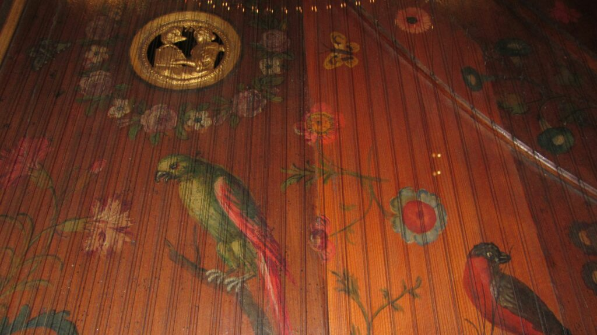
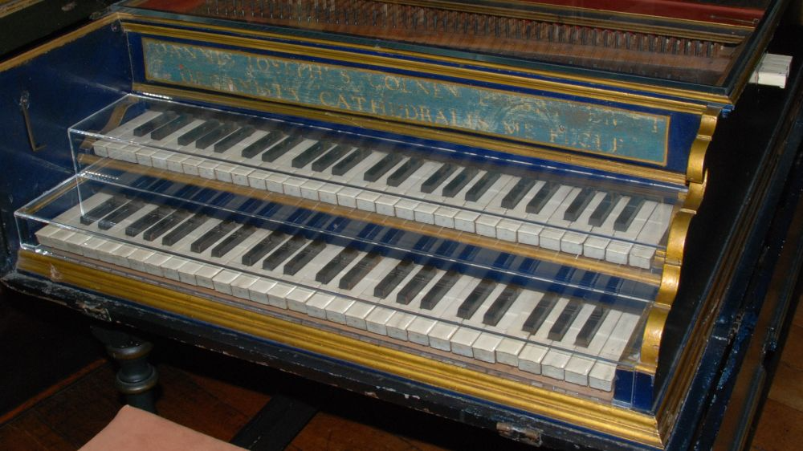
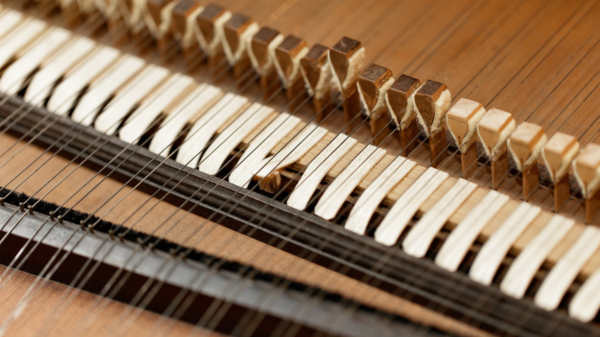
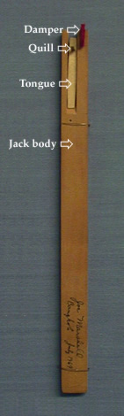
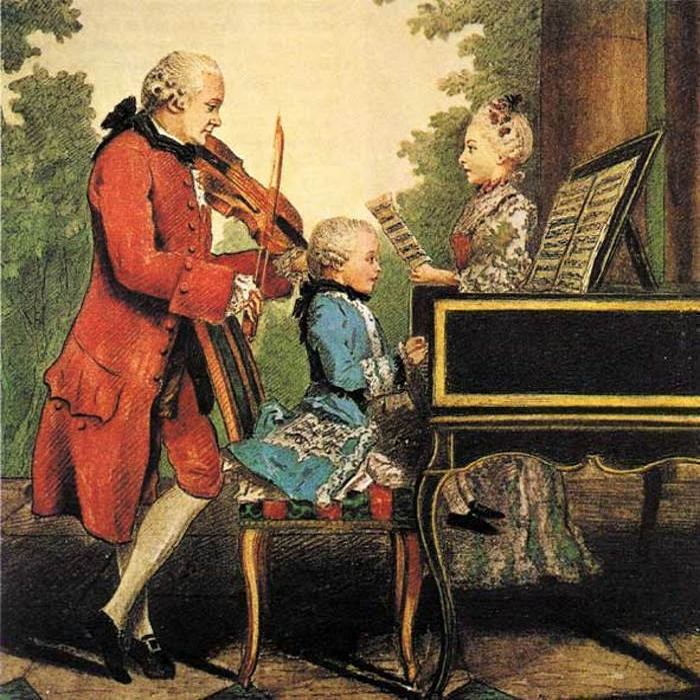

Overzicht
Onderdelen
Het klavecimbel heeft verschillende onderdelen. Hier ga ik de meest belangrijke onderdelen bespreken.
Kast

Klavecimbelmeubels
Ook wel klavecimbelkoffer of klavecimbelkast genoemd, is een meubelstuk dat speciaal is ontworpen om een klavecimbel te huisvesten en te beschermen wanneer deze niet in gebruik is. Deze meubelstukken waren populair tijdens de barokperiode, toen het klavecimbel een veelgebruikt muziekinstrument was. Er zijn verschillende soorten kasten met elk hun unieke vorm. Bijvoorbeeld een spinet. Een spinet is bekend om zijn schuine vorm, de snaren liggen schuin ten opzichte van het klavier.
Hier zijn enkele belangrijke kenmerken en functies van klavecimbelmeubels:
-
Bescherming: Klavecimbelmeubels zijn ontworpen om het delicate klavecimbel te beschermen tegen stof, vocht en mogelijke schade wanneer het niet in gebruik is. Het beschikt doorgaans over scharnierende of schuifdeuren die kunnen worden gesloten om het instrument te omsluiten.
-
Verborgenheid: Wanneer de deuren gesloten zijn, is het klavecimbel aan het zicht onttrokken, waardoor de ruimte een opgeruimde en elegante uitstraling behoudt.
-
Decoratie: Veel klavecimbelkoffers en kasten waren uitvoerig versierd met sierlijk houtwerk, houtsnijwerk en soms zelfs geschilderde ontwerpen. Deze decoratieve elementen droegen bij aan de algehele esthetiek van de kamer.
-
Functionaliteit: Het meubilair is ontworpen om niet alleen functioneel te zijn voor bescherming, maar ook voor gemakkelijke toegang. Als de deuren open zijn, is het klavecimbel gemakkelijk toegankelijk om te bespelen.
-
Integratie met kamerdecor: Klavecimbelmeubels zijn vaak ontworpen om te harmoniëren met de algehele inrichting en stijl van de kamer waarin ze werden geplaatst, waardoor ze een integraal onderdeel van het interieurontwerp werden.
Deze meubelstukken waren vooral populair in aristocratische en welvarende huishoudens tijdens de barok, toen het klavecimbel een hoog aangeschreven muziekinstrument was. Terwijl de populariteit van het klavecimbel afnam met de opkomst van de piano in de 19e eeuw, blijven klavecimbelmeubels een bewijs van het vakmanschap en de designesthetiek van vroegere eeuwen en zijn ze nog steeds te vinden in sommige historische omgevingen en musea.
Klankbord

In de context van muziekinstrumenten is een klankbord een essentieel onderdeel dat een cruciale rol speelt bij het produceren van geluid. Hier zijn enkele veelvoorkomende toepassingen van de term:
-
Pianoklankbord
Bij een piano is de zangbodem een grote, dunne houten plank die zich onder de snaren bevindt. Wanneer de snaren van de piano trillen, versterkt de zangbodem deze trillingen, wat resulteert in het geluid dat we horen. Het ontwerp en de kwaliteit van de zangbodem zijn kritische factoren bij het bepalen van de klankkwaliteiten van het instrument.
-
Gitaarklankbord
Bij een akoestische gitaar is de zangbodem het bovenste deel van de gitaarbody. Het is meestal gemaakt van hout en is verantwoordelijk voor het overbrengen van de trillingen van de snaren naar de lucht, waardoor het geluid van de gitaar ontstaat. Verschillende houtsoorten en constructiemethoden kunnen de klank en resonantie van de gitaar aanzienlijk beïnvloeden.
-
Klavecimbel klankbord
Klavecimbels hebben, net als piano's, klankborden die helpen het geluid te versterken dat wordt geproduceerd door het tokkelen van snaren. De kwaliteit en het ontwerp van de zangbodem zijn belangrijk voor de klankeigenschappen van het instrument.
-
Andere muziekinstrumenten
De term "klankbord" kan worden toegepast op de klankbodem van verschillende andere snaarinstrumenten, zoals violen, cello's en luiten. De eigenschappen van het klankbord spelen een belangrijke rol bij het vormgeven van het geluid van het instrument.
In wezen is de zangbodem een essentieel onderdeel van veel muziekinstrumenten, en het materiaal, de vorm en de constructie ervan hebben een grote invloed op de klankkleur en de algehele geluidskwaliteit van het instrument.
Klavier

Het toetsenbord of klavier van een klavecimbel is het deel van het instrument waarmee de speler communiceert om muziek te produceren. Het lijkt qua uiterlijk op een pianotoetsenbord, maar werkt anders. Hier zijn de belangrijkste kenmerken en componenten van een klavecimbeltoetsenbord:
-
Toetsen: Klavecimbeltoetsenborden bestaan uit een set toetsen die doorgaans van hout zijn gemaakt en aan het sleutelframe zijn bevestigd. Het aantal toetsen kan variëren, maar een standaard klavecimbeltoetsenbord heeft meestal tussen de 49 en 61 toetsen, verspreid over vier tot vijf octaven. De toetsen zijn gerangschikt in een specifiek patroon dat zowel witte als zwarte toetsen bevat.
-
Witte en zwarte toetsen: net als bij een pianoklavier zijn de klavecimbeltoetsen verdeeld in witte en zwarte toetsen. De witte toetsen zijn natuurlijke noten (bijvoorbeeld C, D, E), terwijl de zwarte toetsen de kruisen en mollen vertegenwoordigen (bijvoorbeeld C#, D#, F#).
-
Toetsdiepte: Klavecimbeltoetsen zijn over het algemeen ondieper dan die van een piano, en bewegen niet zo veel als ze worden ingedrukt. De diepte van de toetsinslag beïnvloedt het volume en de toon van het geproduceerde geluid.
-
Sleutelhefboommechanisme: Wanneer een speler een toets indrukt, activeert deze een hefboommechanisme in het klavecimbel. In tegenstelling tot een piano, waar de toetsen de snaren raken, tokkelt het klavecimbelmechanisme de snaren aan met behulp van een plectrum of veer.
-
Registers: Sommige klavecimbels hebben meerdere sets snaren, registers genaamd, die elk worden bestuurd door een eigen set aansluitingen. De registers kunnen worden geselecteerd met behulp van registers of knoppen, waardoor variaties in toon en timbre mogelijk zijn.
-
Dynamische controle: Klavecinisten bereiken dynamische controle door de kracht waarmee ze de toetsen aanslaan te variëren, in plaats van door het volume te veranderen door middel van toetsaanslag, zoals op een piano. Dit betekent dat het volume van een klavecimbelnoot grotendeels wordt bepaald door de kracht die de speler uitoefent.
Het klavecimbeltoetsenbord is een integraal onderdeel van het produceren van het unieke en karakteristieke geluid van het instrument. Het verschilt aanzienlijk van het pianotoetsenbord in termen van actie, hoe de snaren worden geactiveerd en de mogelijkheid om de dynamiek te controleren. Deze verschillen maken het klavecimbel tot een onderscheidend instrument met zijn eigen klankkwaliteiten en speeltechnieken.
Snaren

Klavecimbelsnaren zijn de essentiële componenten die verantwoordelijk zijn voor het produceren van geluid in een klavecimbel. In tegenstelling tot een piano, waar hamers op de snaren slaan, genereert een klavecimbel geluid door op de snaren te tokkelen.
Belangrijke punten over klavecimbelsnaren:
-
Materiaal: Klavecimbelsnaren zijn meestal gemaakt van staal of messing, dat wordt gekozen vanwege zijn treksterkte en het vermogen om een helder en helder geluid te produceren.
-
Snaarlengte: De lengte van de snaren varieert, waarbij langere snaren lagere toonhoogtes produceren en kortere snaren hogere toonhoogtes genereren. Een typisch klavecimbel heeft snaren die in lengte variëren van ongeveer 7 inch voor de hoogste noten tot meer dan 60 inch voor de laagste noten.
-
Snaardiktes: De snaren op een klavecimbel hebben verschillende diktes, of meters, met dikkere snaren voor de lagere noten en dunnere snaren voor de hogere noten. Dit is nodig om de gewenste toonhoogte en geluidskwaliteit te produceren.
-
Tokkelmechanisme: Klavecimbelsnaren worden getokkeld door een mechanisme dat bestaat uit een krik (met een plectrum of veer) die wordt geactiveerd wanneer een toets op het toetsenbord wordt ingedrukt. Deze tokkelende actie zet de snaren in beweging om geluid te produceren.
-
Registers: Sommige klavecimbels hebben meerdere sets snaren die registers worden genoemd. Elk register wordt bestuurd door zijn eigen set aansluitingen en tokkelmechanisme. Door verschillende registers te selecteren met behulp van registers of knoppen, kan de klavecinist variaties in toon en timbre bereiken.
-
Stemmen: Net als elk ander snaarinstrument moeten klavecimbelsnaren zorgvuldig worden gestemd op de gewenste toonhoogte. Stempennen worden gebruikt om de spanning van elke snaar aan te passen om de juiste toonhoogte te bereiken.
-
Snaarkwaliteit: De kwaliteit en staat van de snaren zijn essentieel voor de algehele prestatie en geluidskwaliteit van het klavecimbel. Oude of versleten snaren kunnen de klank van het instrument beïnvloeden, dus onderhoud en zo nu en dan vervanging van de snaren zijn noodzakelijk.
De tokkelactie, gecombineerd met het unieke toetsenbordmechanisme van het klavecimbel, draagt bij aan het aparte en karakteristieke geluid. Het materiaal, de lengte en de dikte van de snaren spelen allemaal een cruciale rol bij het vormgeven van de klankkwaliteiten van het instrument.
Dokken

Bij een klavecimbel zijn de dokken een cruciaal onderdeel van het tokkelmechanisme dat geluid produceert. Aan de dokken is meestal een klein plectrum bevestigd, vaak gemaakt van ganzenveer of ander materiaal, en het is verantwoordelijk voor het tokkelen van de snaren wanneer een toets op het klavecimbeltoetsenbord wordt ingedrukt.
Het dok en plectrummechanisme is een integraal onderdeel van het ontwerp van het klavecimbel en is verantwoordelijk voor de unieke en onderscheidende klank van het instrument. Wanneer een toets wordt ingedrukt, wordt de dok omhoog gebracht, waardoor het plectrum aan de snaar tokkelt, wat geluid produceert. De kracht waarmee de toets wordt ingedrukt, bepaalt het volume en de expressie van de op het klavecimbel gespeelde noot. Dit tokkelmechanisme is een van de belangrijkste verschillen tussen het klavecimbel en de piano, dat geluid produceert door met hamers op de snaren te slaan.
Plectrum
Een plectrum is een klein plat stuk gereedschap dat meestal is gemaakt van plastic, metaal of andere materialen. Muzikanten, vooral gitaristen, gebruiken plectrums om de snaren van muziekinstrumenten, zoals gitaren en mandolines, te tokkelen of te tokkelen. Het plectrum zorgt voor meer precisie en controle bij het bespelen van snaarinstrumenten, en helpt bij het produceren van een helder en onderscheidend geluid bij het aanslaan van de snaren. Plectrums zijn er in verschillende vormen en diktes, zodat ze bij verschillende speelstijlen en muziekgenres passen.
Speler

Een klavecinist is een muzikant die gespecialiseerd is in het bespelen van het klavecimbel, een toetsinstrument dat populair was tijdens de barokperiode en bekend staat om zijn unieke klank, tokkelmechanisme en onderscheidende speeltechnieken. Klavecinisten zijn bedreven in het uitvoeren van muziek die voor klavecimbel is geschreven, maar ook in historische uitvoeringspraktijken die verband houden met barokmuziek.
Voorbeelden bekende muziekanten
-
Johan Sebastiaan Bach
-
Georg Friedrich Händel
-
Wolfgang Amadeus Mozart
-
Domenico Scarlatti
-
Scott Ross